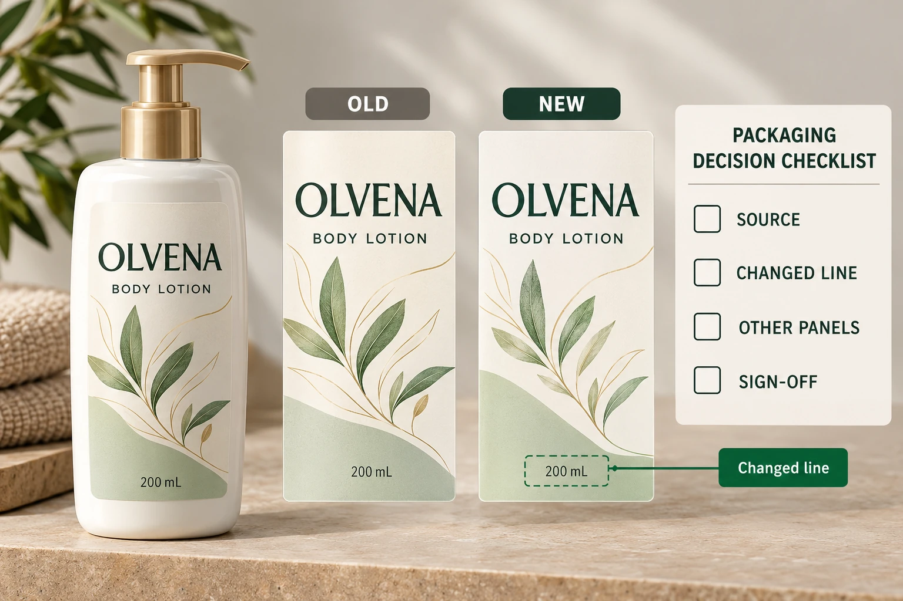

Establish the baseline before editing
Keep the last accepted output and the new authorised copy instruction identifiable. Record who owns the wording and which product versions it affects. If several people sent conflicting edits, the designer needs one reconciled instruction from the responsible owner.
Describe the change explicitly. Replace a specified sentence, add an approved block, remove an identified phrase or change a defined product field. A comment such as update the back leaves too much interpretation for the artwork operator and too little evidence for the approver.
The reorder guide connects approved versions to a repeat order. This review can occur before a first order as well. Its narrower purpose is to establish whether a supplied wording change was propagated correctly into the actual artwork.
List every intended destination
Identify the label, panel and block for each change. If the same approved line occurs on a bottle, jar and carton, decide which instances are included. A text search can help locate occurrences, but the content owner must determine whether similar text has the same meaning in every location.
Keep explicit exclusions. An old passage may remain intentionally on a different product or version. Without that distinction, a global replacement can be just as problematic as a missed change. The goal is controlled propagation, not the largest possible number of replacements.
Also record dependencies. A longer sentence may affect line breaks or require a layout review. A changed product fact may trigger separate data or market checks. The copy reconciliation identifies those questions; it does not authorise a designer to shorten the supplied wording to make everything fit.
Compare the actual old and new outputs
Adobe's PDF comparison documentation describes document comparisons and a text-only option. Such tools can help locate differences. Their reports still need interpretation against the authorised instructions and the actual document structure.
Use the relevant comparison method for the files you have. Outlined or image-based text may need visual examination rather than reliance on extracted characters. Record any limitation instead of treating an empty automated result as proof that all wording is unchanged.
For each intended edit, confirm that it appears at the correct destination. Then examine unexplained differences and ask whether they are authorised, incidental layout changes or errors requiring correction. Review at actual size after text reflows; a correct paragraph can still be presented poorly on the final label.
Close a change log that another reviewer can follow
Use this editorial log to connect instructions, implementation and approval. Keep the detailed approved wording in the controlled project source rather than scattering conflicting copies through email.
| Record | Required detail | Closure question |
|---|---|---|
| Baseline | Previously accepted artwork and revision | What was the starting point? |
| Instruction | Authorised source and change reference | What was supposed to change? |
| Destination | Product, panel and block | Where must the change appear? |
| Exclusions | Similar instances intentionally unchanged | What must not be replaced? |
| Observed difference | Exact output location and finding | Does the new file match the instruction? |
| Unexpected difference | Observation and responsible response | Is it intended or does it need correction? |
| Release | Reviewed replacement file and approver | Which version is permitted to proceed? |
Reconcile the instructions first. Perform the edit and export the replacement through the agreed workflow. Compare it with the baseline, resolve both missing and unexpected differences, and obtain the relevant reviewers' acknowledgement. If another correction is made, repeat the affected comparison against an identified file.
Keep release pending when a requested destination remains unchecked or an unexplained change affects controlled copy. A later filename and a visually familiar front panel cannot substitute for that closure.

Avoid turning a small edit into an uncontrolled redesign
A hypothetical spelling correction in one marketing sentence may justify a narrow review, provided no other relevant elements changed. The team can document that limited scope and retain the comparison rather than reopen unrelated material sampling.
A longer replacement paragraph can justify layout and legibility checks across the affected panel. If product data changed, the responsible brand owner may need to review additional dependencies before print release. The difference is the consequence of the actual edit, not the number of words in the request.
Use the digital-proof guide for the wider artwork conversation. Copy reconciliation does not approve physical color, adhesive suitability or bottle fit. Keep those approvals connected to the same released revision where relevant.
For cosmetic label orders, provide the container, dimensions, quantity per design, accepted baseline and authorised changes. Mark affected panels and unresolved differences. The contact form prepares a message; send files separately by email or WhatsApp. Ask the printer to acknowledge the reconciled output, not simply the file with the newest name.